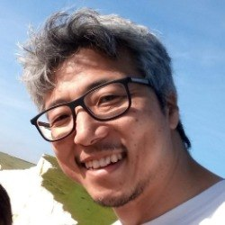
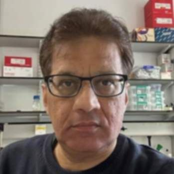
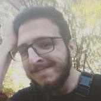
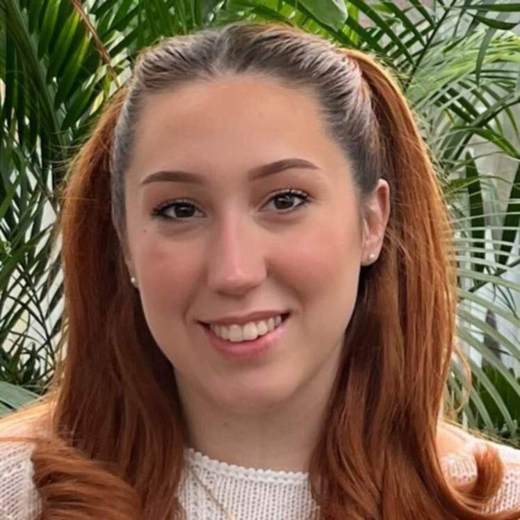
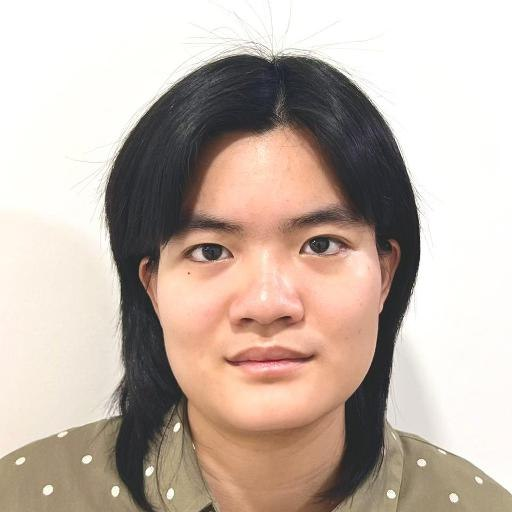
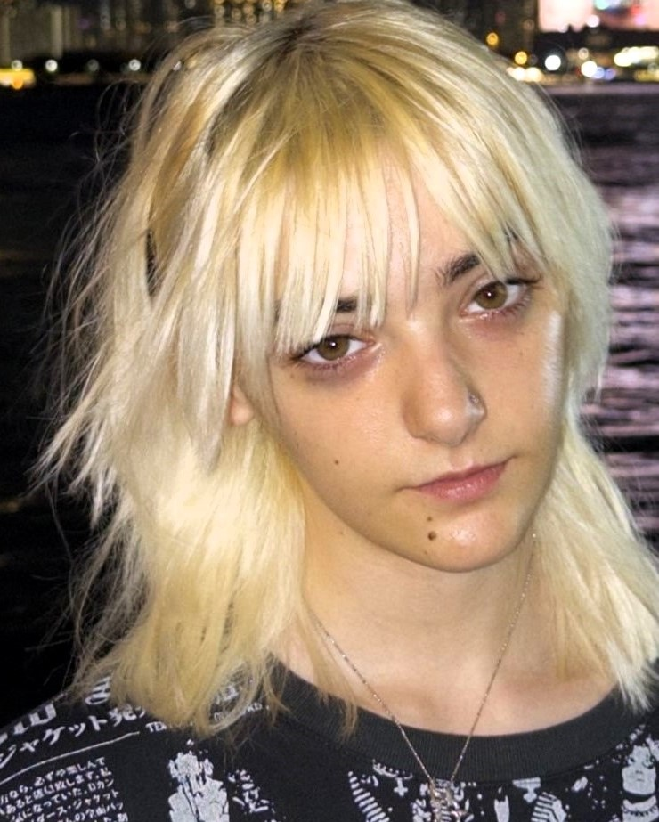

People


Sarbjit Nijjar
Postdoctoral researcher

Tudor Onose
PhD student (MIBTP)

Marina Lazic
PhD student (MIBTP)

Amanda Do
PhD student (Leverhulme Trust)

Abelaine Ladinez
PhD student (EUTOPIA)

Agatha Roberts
Mbio student (Biochemistry)
Alumni
Postdoctoral researchers
Valentin Dospinescu (2025), Tailise de Souza (2020–2023), Dario Bazzil (2022), Manjari Ghanshyam (2019–2021), Dmitry Malyshev (2019), Jame Stratford (2015–2018), Teja Sirec (2015–2018)
PhD students
Renee Taylor (2020–2024), Valentin Dospinescu (2020–2024), Segun Wahab (2019–2022), Iago Grobas (2017–2021), Marco Delise (2016–2019)
Master’s students
Jessica Alhusari (2024–2025), Tabby Chadney (2023–2024), Izzy Bowen-Lowe (2023–2024), Tudor Onose (2022–2023), Max Harris (2022–2023), Emma Simpson (2020–2021), Marek Podgajny (2019–2020), Brannon Nicholls (2018–2019), Selvi Vickramathithan (2017–2018), Arthur Barker (2017–2018), Shifquat Ullah (2016–2017), Chris Norman (2016–2017), Matthew Painter (2016–2017)
Research assistant
Elena Ontanon McDonald (2019)
Visitors
Mitsuki Suzuki (Kyoto University, 2025), Pietro Bertolotti (IIT, 2022), Mar Moreno (Erasmus+, 2019), Elena Ontanon McDonald (Erasmus+, 2019), Pauline Buffard (University Grenoble Alpes, 2017)